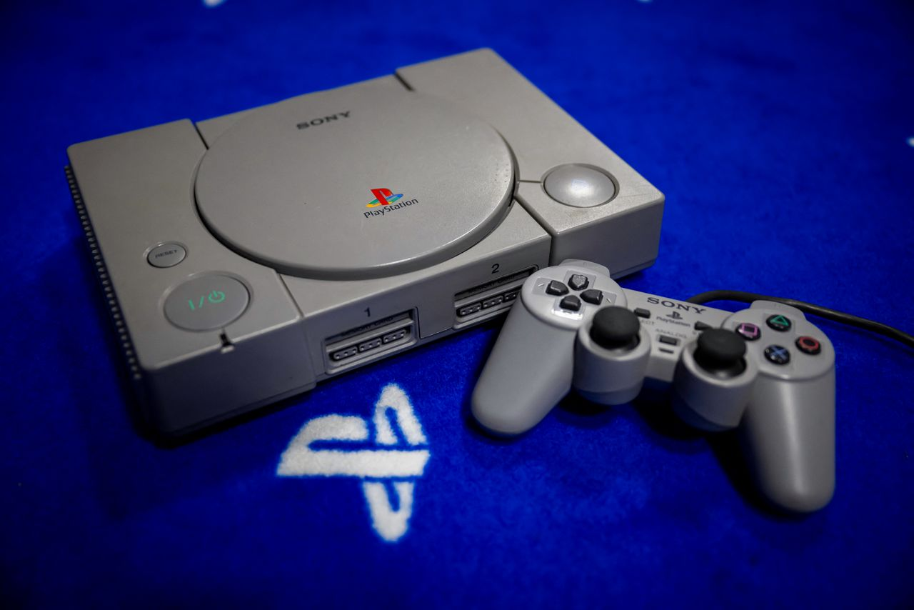
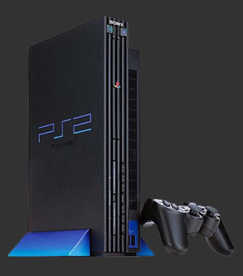
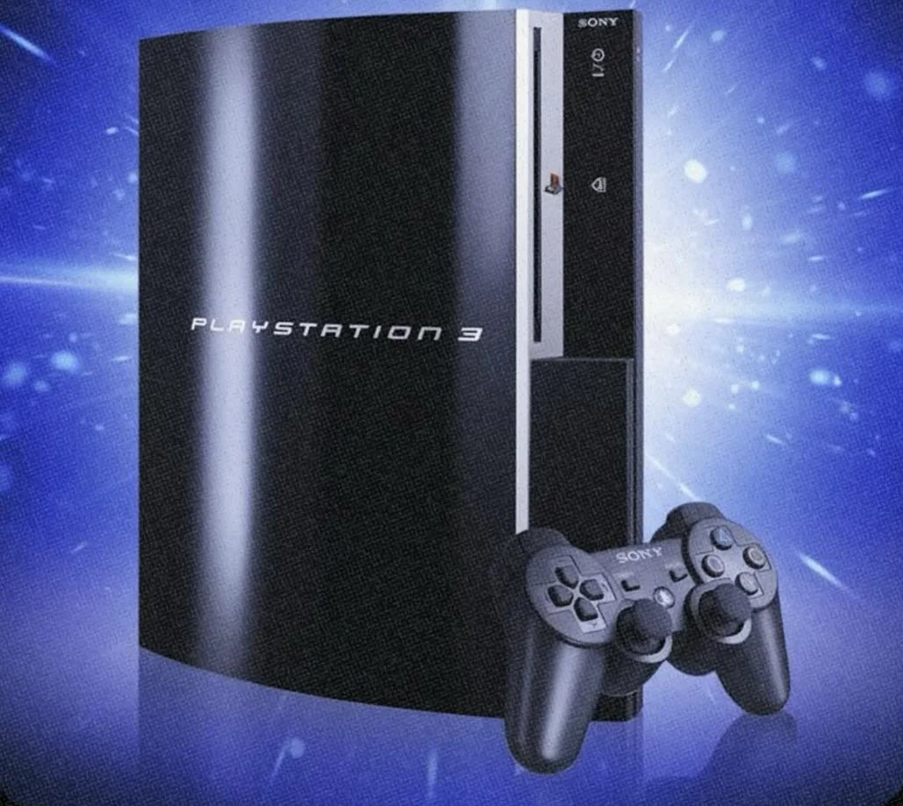
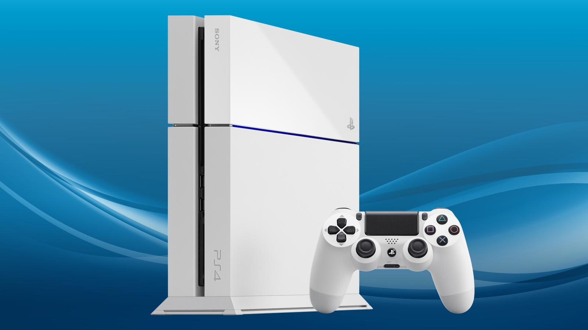
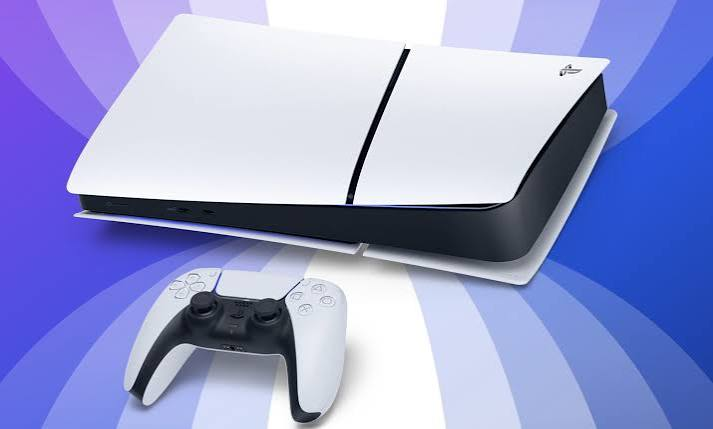

Hardware Deep Dive
Every console, every spec, every controller — from 1994's original grey box to the futuristic white monolith of today.
The one that started it all.
Born from a failed Nintendo partnership, the PlayStation launched on December 3, 1994 in Japan and became an immediate phenomenon. Sony's first console bet on CD-ROM technology when cartridges still ruled, opening the door to longer games, cinematic cutscenes, and a new breed of developers. It democratized 3D gaming and introduced the world to franchises like Crash Bandicoot, Metal Gear Solid, and Final Fantasy VII.
| CPU | MIPS R3000A @ 33.8 MHz |
| GPU | Sony GPU @ 33.8 MHz |
| RAM | 2 MB Main · 1 MB VRAM |
| Storage | Memory Card (1 MB) |
| Media | CD-ROM (single speed) |
| Resolution | Up to 640 × 480 |
| Colors | 16.7 million |
| Polygons | ~360,000 / sec |
| Release Price | $299 USD |

Original Controller
PlayStation Controller / DualShock
Launched with a simple D-pad + button controller, then revolutionary in 1997 when Sony introduced the DualShock — the first mass-market controller with dual analog sticks and vibration feedback motors. The iconic △ ○ ✕ □ face buttons were born here.
The greatest console ever made.
Released on March 4, 2000, the PS2 became the best-selling video game console of all time — a record that stands to this day. Powered by the Emotion Engine and capable of playing DVDs, it was as much a home entertainment device as a gaming machine. With a library of over 4,000 titles spanning 12 years, it offered unforgettable experiences from Shadow of the Colossus to Grand Theft Auto: San Andreas.
| CPU | Emotion Engine @ 294 MHz |
| GPU | Graphics Synthesizer @ 147 MHz |
| RAM | 32 MB RDRAM · 4 MB VRAM |
| Storage | 8 MB Memory Card |
| Media | DVD-ROM / CD-ROM |
| Resolution | Up to 1080i |
| Polygons | ~75 million / sec |
| Network | Network Adapter (optional) |
| Release Price | $299 USD |

Controller
DualShock 2
An evolution of the DualShock, the DualShock 2 introduced pressure-sensitive buttons — every face button and trigger could detect how hard you pressed them. The sleek, dark design became one of the most copied controller layouts in gaming history.
The Cell processor heard 'round the world.
November 11, 2006. The PS3 launched with breathtaking ambition — a Cell Broadband Engine processor, built-in Blu-ray drive (winning the format war against HD-DVD), and free online play via PlayStation Network. It was a challenging machine to develop for, but its eight SPE processing cores delivered landmark exclusives: Uncharted 2, The Last of Us, and God of War III pushed the hardware to its absolute limits.
| CPU | Cell Broadband Engine @ 3.2 GHz (1 PPE + 7 SPEs) |
| GPU | NVIDIA RSX "Reality Synthesizer" @ 550 MHz |
| RAM | 256 MB XDR · 256 MB GDDR3 |
| Storage | 20–500 GB HDD (removable) |
| Media | Blu-ray / DVD / CD |
| Resolution | Up to 1080p |
| Online | PlayStation Network (free) |
| Connectivity | Wi-Fi, Bluetooth, HDMI |
| Release Price | $499 / $599 USD |

Controller
DualShock 3 / SIXAXIS
The PS3 launched with the SIXAXIS — the first PlayStation controller with motion sensing (gyroscope + accelerometer). Feedback from fans led to the return of rumble in the DualShock 3. Both controllers connected wirelessly via Bluetooth for the first time.
For the players. For the era.
November 15, 2013. Sony announced the PS4 with a developer-friendly x86 architecture, unprecedented social features, and a battle cry: "For the Players." It launched at $399 — $100 less than Xbox One — and never looked back. The PS4 sold over 117 million units, powered by Bloodborne, Horizon Zero Dawn, Spider-Man, and The Last of Us Part II. It also introduced Remote Play, Streaming, and the Share button that changed how we experience games together.
| CPU | AMD Jaguar x86-64 @ 1.6 GHz (8 cores) |
| GPU | AMD GCN @ 800 MHz · 1.84 TFLOPS |
| RAM | 8 GB GDDR5 (unified) |
| Storage | 500 GB / 1 TB HDD |
| Media | Blu-ray / DVD |
| Resolution | Up to 1080p (PS4 Pro: 4K) |
| Online | PlayStation Network (PS Plus) |
| Connectivity | Wi-Fi, Bluetooth 2.1, HDMI 1.4 |
| Release Price | $399 USD |

Controller
DualShock 4
The DualShock 4 was the most significant controller redesign since the original. A capacitive touchpad in the center, a light bar for positional tracking, a built-in speaker, and a Share button that let players capture and broadcast gameplay. The improved analog sticks and trigger feel set a new standard.
Feel the game. Speed is everything.
November 12, 2020. The PlayStation 5 arrived as one of the boldest hardware designs in gaming history — a towering white-and-black monolith engineered around one revolutionary component: a custom 825 GB NVMe SSD delivering load speeds that eliminated traditional load screens forever. Paired with the DualSense controller's adaptive triggers and haptic feedback, the PS5 fundamentally changed how games feel to play, not just how they look.
| CPU | AMD Zen 2 @ 3.5 GHz (8 cores / 16 threads) |
| GPU | AMD RDNA 2 @ 2.23 GHz · 10.28 TFLOPS |
| RAM | 16 GB GDDR6 (unified) |
| Storage | 825 GB NVMe SSD · 5.5 GB/s raw |
| Media | 4K UHD Blu-ray / Streaming |
| Resolution | 4K @ 120fps · 8K support |
| Ray Tracing | Hardware-accelerated |
| Audio | Tempest 3D Audio Engine |
| Release Price | $499 USD (Disc) / $399 (Digital) |

Controller
DualSense
The DualSense is the most innovative controller in PlayStation history. Adaptive triggers can simulate bowstring tension, weapon recoil, or rain resistance. Haptic feedback replaces simple rumble with precise, textured sensations — you feel rain on a beach, footsteps in snow, or the resistance of ice. A built-in microphone and Create button complete the package.